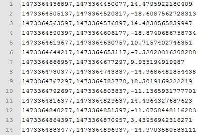
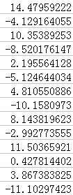
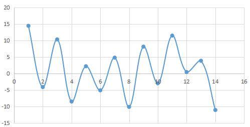
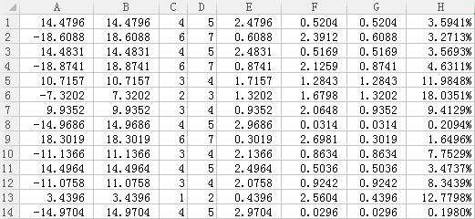
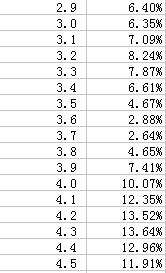
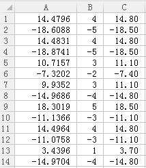

现在已经能够采集原始数据，并通过双向积分算法把所有电梯运动阶段都计算出来，得到了形如下图的输出文件：

文件以行为单位，每一行代表一个电梯运动阶段。行内第一个数据表示该电梯运动阶段的开始时间，第二个数据表示该电梯运动阶段的结束时间，第三个数据表示该电梯运动阶段的移动距离。时间采用类Unix时间戳（精确到毫秒），移动距离采用米为单位（正数表示向上运动，负数表示向下运动）。
接下来就是需要从这些高度信息中推算出层数，即为这个文件增加一列，表示每个电梯运动阶段的移动层数。一种自然的想法是采用聚类算法，因为每一个楼层都可以看做一个类，电梯停止的位置不在这个类就是在那个类，所以如果把电梯停靠的位置标记在一个数轴上，那么应该会发现，数据一组组地聚在一起。
为了验证聚类算法是否可行，我就用上图中的数据进行试验。把第1行到第i行的移动距离累加，就能得到第i个运动阶段结束时电梯所在的高度（相对于第一个运动阶段开始时）。在Execl中得到如下累加和：

然后把他们画成折线图

连用肉眼都看不出在y轴上有什么聚集特性，更别说是聚类算法了。而且，由于加速度计得到高度的误差会累加，所以越到后面累计误差就越大，足以大到超过一层楼的高度。
所以聚类算法是不可行的。接下来我想到了线性回归。假设每层楼的层高都是一样的，那么楼层数和高度就应该是正比关系，而且楼层数必然是一个正整数。是否能够利用这个特性来推算出楼层数呢？
我的思路是这样的：
我迭代地“猜”每层的高度，比如先猜层高是2.9米，然后猜层高是3.0米，再猜层高是3.1米，如此类推，一直猜到楼层是4.5米。其实猜测的起始层高、终止层高、层高步长都可以自己设置。对于每一次猜测，我就计算一个“平均相对误差值”。那么，平均相对误差值最小的时候对应的层高应该是最合理的。那么平均相对误差值是什么呢？假设我猜测层高是3.0米，那么就如下表计算：

A列 = 每个阶段的移动距离，B列 = ABS( A列) ，
C列 = FLOOR( B列 / 3 )，D列 = CEILING( B列 / 3 )，
E列 = B列 – C列 * 3，F列 = D列 *3 – B列，
G列 = MIN( E列 , F列 )，H列 = G列 / B列 * 100%
B列取绝对值之后，就成了绝对距离了。C列把每个运动阶段的绝对距离除了猜测的层高3.0，并向下取整，得到的就是可能的楼层数。同样，D列每个运动阶段的绝对距离除了猜测的层高3.0，并向上取整，得到的就是也是一个可能的楼层数。那么到底选用哪个楼层数呢？先计算这两个楼层数所对应的绝对误差，E列就是向下取整时的绝对误差，F列就是向上取整时的绝对误差。比如看第1行数据，14.4796米如果看做是4层楼，每层3米高，那么绝对误差就是14.4796-4*3=2.4796米，如果看做5层楼，那么绝对误差就是5*3-14.4796=0.5204米。这两个误差中后者更小，所以把14.4796米看做5层楼更加合理。G列就是两个误差中较小的误差。H列就是绝对误差相对于总高度的相对误差。
接着，把所有的相对误差求均值，可以得到平均相对误差为6.3504%，此值就是如果层高是3.0米时，加速度计测量距离所产生的平均误差。
相同地，计算3.1米时的误差、3.2米时的误差等等，可以得到下表：

取其中最小的误差对应的层高即可。显然，层高为3.7米时最合理。而这与实际测量值高度吻合！
有了层高之后，再去重新计算对应的楼层数即可（运动距离），于是可以得到下表：

A列是移动距离，B列是对A列除以3.7以后四舍五入得到楼层数，C列把B列乘以3.7得到校准后的层高。
OK，最后贴上C#的代码：
using System;
using System.Collections.Generic;
using System.Linq;
using System.Text;
using System.IO;
namespace Zhoujianshi
{
class Program
{
static void Main(string[] args)
{
//args = new string[] {@"R:\1.txt",@"R:\2.txt","2.9","4.5","0.05" };
if(args.Length<5)
{
Console.WriteLine("usage: <inputFile> <outputFile> <startHeight> <endHeight> <heightStep>");
return;
}
string inputFile = args[0];
string outputFile = args[1];
double startHeight = Double.Parse(args[2]);
double endHeight = Double.Parse(args[3]);
double heightStep = Double.Parse(args[4]);
TransToFloor trans = new TransToFloor(inputFile, outputFile);
trans.setStartHeight(startHeight);
trans.setEndHeight(endHeight);
trans.setHeightStep(heightStep);
trans.transform();
}
}
class TransToFloor
{
private const double DEFAULT_STARTHEIGHT=2.9;
private const double DEFAULT_ENDHEIGHT = 4.5;
private const double DEFAULT_HEIGHTSTEP = 0.05;
//输入文件
private string inputFile;
//输出文件
private string outputFile;
//开始尝试的最小高度
private double startHeight;
//结束尝试的最小高度
private double endHeight;
//尝试高度的步长
private double heightStep;
public TransToFloor(string inputFile,string outputFile)
{
this.inputFile = inputFile;
this.outputFile = outputFile;
}
public void setStartHeight(double startHeight)
{
this.startHeight = startHeight;
}
public void setEndHeight(double endHeight)
{
this.endHeight = endHeight;
}
public void setHeightStep(double heightStep)
{
this.heightStep = heightStep;
}
public void transform()
{
//按列读取文件
double[][] rawDatas = TextRead(inputFile,',',new uint[]{0,1,2});
double[] startTimes = rawDatas[0];
double[] endTimes = rawDatas[1];
double[] distances = rawDatas[2];
//得到距离绝对值
double[] absDistances=new double[distances.Length];
for (int i = 0; i < distances.Length; i++)
absDistances[i] = Math.Abs(distances[i]);
//最佳层高
double bestFloorHeight=0;
//最小相对误差
double minError=100;
for(double h=startHeight;h<=endHeight;h+=heightStep)
{
//误差累计
double errorSum=0;
for (int i = 0; i < absDistances.Length; i++)
{
double absDistance = absDistances[i];
//在该层高下，此高度对应的层数（向下取整）
int floor1 = (int)(absDistance / h);
//在该层高下，此高度对应的层数（向上取整）
int floor2=floor1+1;
//向下取整的层数对应的绝对误差
double error1 = absDistance - floor1 * h;
//向上取整的层数对应的绝对误差
double error2 = floor2 * h - absDistance;
//取较小的绝对误差
double error = Math.Min(error1, error2);
//相对误差（无量纲）
double errorRelative = error / absDistance * 100;
//累计误差
errorSum+=errorRelative;
}
//此假设的层高对应的平均误差
double avgErrorRelative=errorSum/absDistances.Length;
Console.WriteLine("tryHeight= "+h+"\tavgError= "+avgErrorRelative+" %");
//如果找到了更合理地层高
if(avgErrorRelative<minError)
{
minError=avgErrorRelative;
bestFloorHeight=h;
}
}
Console.WriteLine("bestFloorHeight= " + bestFloorHeight + "\tminError= " + minError+" %");
//打开文件
StreamWriter writer = new StreamWriter(outputFile, false);
//累计楼层数
int sumFloor = 0;
for (int i = 0; i < distances.Length; i++)
{
int floor = (int)Math.Round(distances[i]/bestFloorHeight);
sumFloor += floor;
double height = sumFloor * bestFloorHeight;
String outputLine = startTimes[i] + "," + endTimes[i] + "," + Convert.ToDouble(height).ToString("0.00") + "," + sumFloor;
Console.WriteLine(outputLine);
writer.WriteLine(outputLine);
}
writer.Close();
}
//按行读取文本文件fileName，每行以splitor分割，取columns指定的列，返回各个列
private double[][] TextRead(string fileName, char splitor, uint[] columns)
{
//统计最大的列编号
uint maxCol = 0;
for (int i = 0; i < columns.Length; i++)
maxCol = Math.Max(maxCol, columns[i]);
StreamReader reader = new StreamReader(new FileStream(fileName, FileMode.Open));
List<double[]> list = new List<double[]>();
string line;
while ((line = reader.ReadLine()) != null)
{
string[] items = line.Split(splitor);
//如果某行没有这么多列
if (items.Length <= maxCol)
throw new ArgumentException("items.Length <= maxCol");
double[] datas = new double[columns.Length];
for (int i = 0; i < columns.Length; i++)
datas[i] = Double.Parse(items[columns[i]]);
list.Add(datas);
}
reader.Close();
//重组数组，行列转置
double[][] result = new double[columns.Length][];
for (int i = 0; i < columns.Length; i++)
result[i] = new double[list.Count()];
int lineIndex = 0;
foreach (double[] datas in list)
{
for (int i = 0; i < columns.Length; i++)
result[i][lineIndex] = datas[i];
lineIndex++;
}
return result;
}
}
}
得到如下输出：